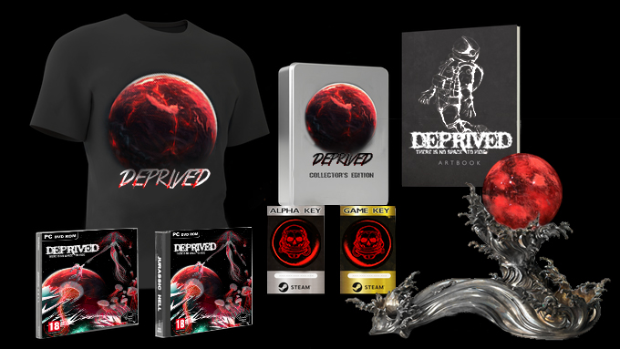

Deprived is a survival horror multiplatform game,which happens in the year 2189.
The story starts when a group of astronautes who were sent to a mision in the Solar System, confront serious technical damages of the spacecraft while crossing the Kuiper belt. The unexpected events direct them to several dificulties which each astronaut has to face individualy.
The world of Deprived will lead you to lots of surprises where you will have to solve several puzzles, hide from the alients and find your way out.

In Deprived, gameplay and story are closely intertwined. They affect each other and lead to differents endings.
The essence of this game is to be cognizant of your choices, which will drive you to differents adventures. Not only you must find the way back home by discovering and solving problems, but also you must warily supervise the state of your own health. The invironment and physics of Deprived are realistic, trinyg to be the closest to a real physical experience.
The player will confront with diverse species of aliens, which can cuase different chalenges and damages during the game play.
Some species of them are inteligent, which makes it hard to fight them back as many of them are so powerful, the player might choose different to hide and avoid them strategically.
The creatures you find will look so alike sea creacures of earth, same mysterious and unknown with unexpected behaviors.
Unfortunately, no guns are allowed at Deprived and nothing was planned in this kind of emergency... You will need to be creative! Make the most of your surroundings and find the best way to distract aliens hunting you!
You will be able to save the objects you find in your inventory.